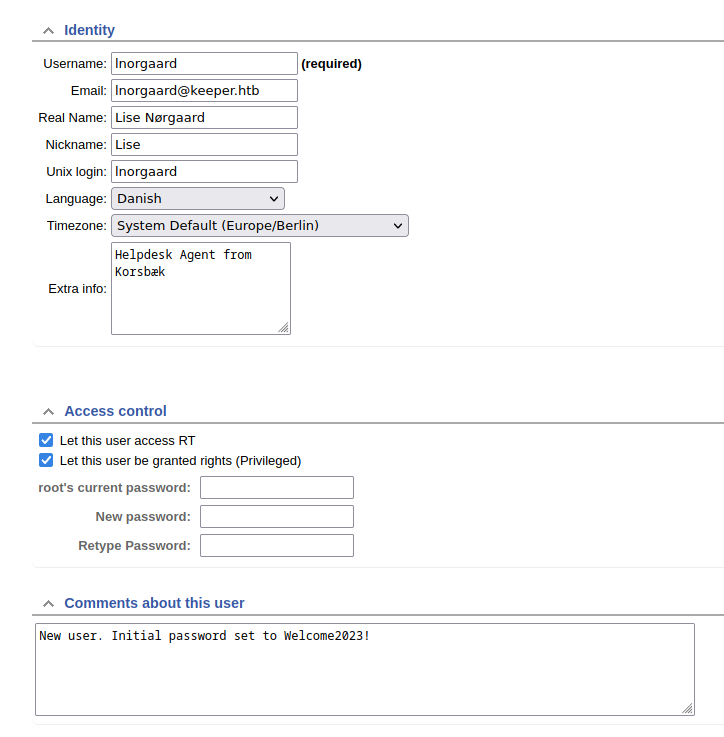
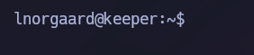
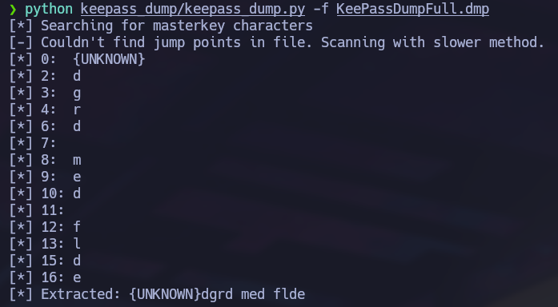
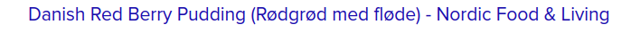

Linux · Laboratorio
Keeper
Análisis de un volcado de KeePass y recuperación de acceso SSH privilegiado.
KeePass · SSH
De Request Tracker a SSH
Empezamos con Nmap y vemos los puertos 22 y 80. La web muestra un login de Request Tracker. Busco las credenciales por defecto y consigo entrar. Dentro reviso la administración de usuarios. En uno de los perfiles encuentro una contraseña escrita en los comentarios. La pruebo por SSH con ese usuario y funciona.


Un volcado de KeePass
En el sistema encontramos un ZIP con dos archivos interesantes: una base de datos .kdbx y un volcado de memoria .dmp de KeePass. Utilizo keepass_dump para recuperar pistas sobre la contraseña maestra. La salida no es completa: faltan caracteres y algunos símbolos no se representan bien.

Buscando la expresión que se alcanza a leer encuentro una referencia que ayuda a reconstruir la contraseña. La pruebo con kpcli y puedo abrir la base de datos.

La clave de root
Dentro de KeePass recorremos las entradas hasta encontrar la información de acceso del servidor. En las notas hay una clave privada en formato PuTTY. La exportamos y la convertimos a formato OpenSSH con puttygen. Después restringimos sus permisos con chmod 600 y la usamos para conectarnos:
ssh root@10.10.11.227 -i id_rsaEl acceso funciona y entramos directamente como root.